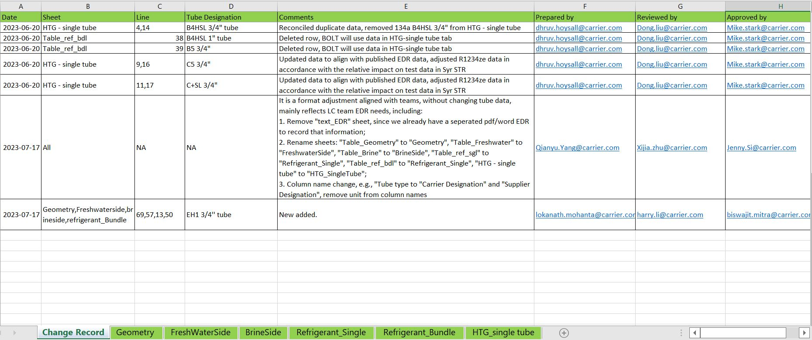
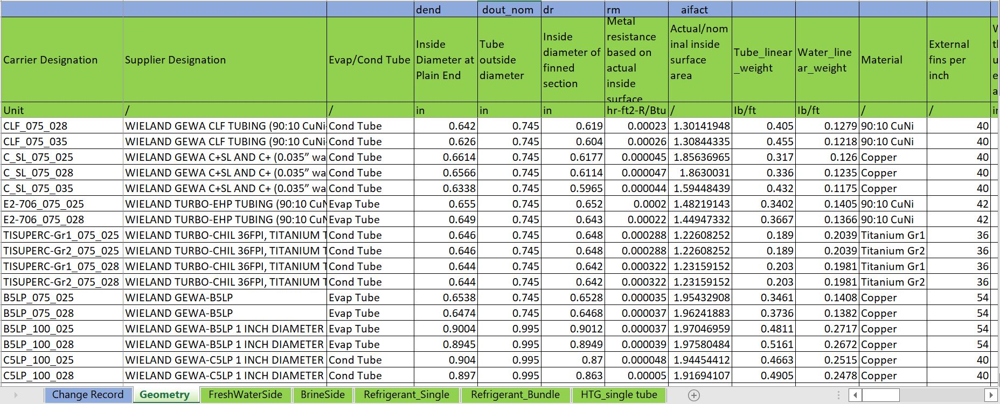
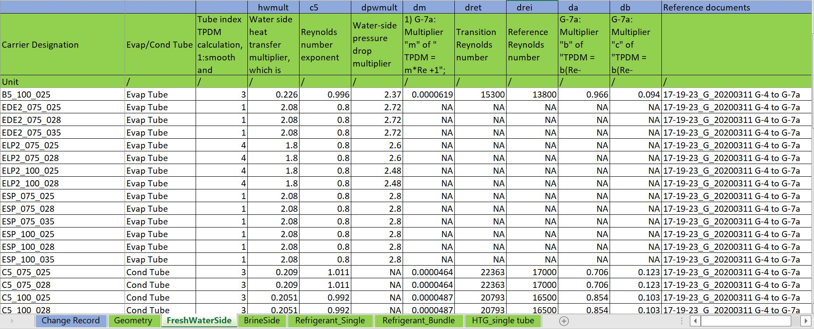
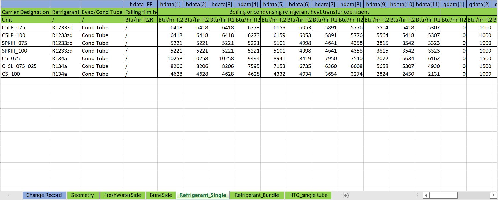
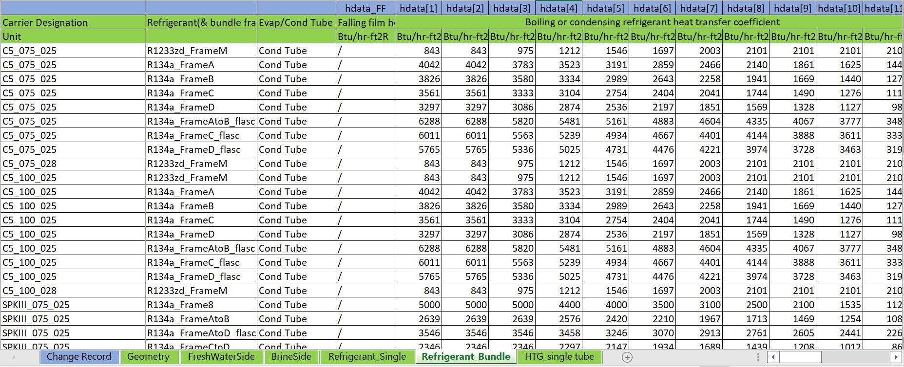
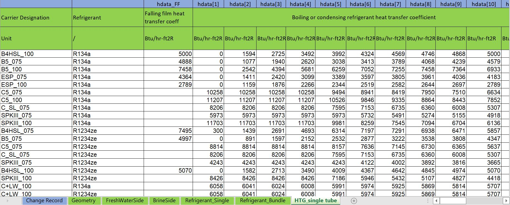

1. EDR Updated Contents Summary
1. Change in 17-19-23 tube EDR word / pdf file:
2. Change in 17-19-23 tube EDR excel file:
In 17-19-23 G data part:
| Change records

Includes:
Date: The date a change in EDR happened; Sheet: in which tube data is changed; Tube Desination: Tube names; Comments: Give comments on the changes to help understand. Prepared by: EDR owner; Reviewed by: 1st level approval; Approved by: 2nd level approval.
|
| Geometry

Includes:
Carrier Desination: Tube name used through all platforms, including BOLT simulation, consisted by “simple name” + “tube ID” + “tube thickness”. Supplier Desination: Tube name used in supplier. Evap/Cond Type: Specify an evaporator or condenser type for tube used. More parameters are tube weight and dimension from obsoleted 17-19-23 C and D sections. Row 2 gives instructions, BOLT SWI also provides more detailed information.
|
| FreshWaterSide:

Includes:
|
Refrigerant_single

Includes:
Carrier Desination: Remove tube thickness since it has no impact on refrigerant side performance. Refrigerant: Refrigerant side performance closely relies on refrgierant type. Bundle factors: A/B/C coefficients to help get bundle factors for single tube condenser type only.
|
Refrigerant_bundle

Includes:
|
HTG_single tube

Includes:
|